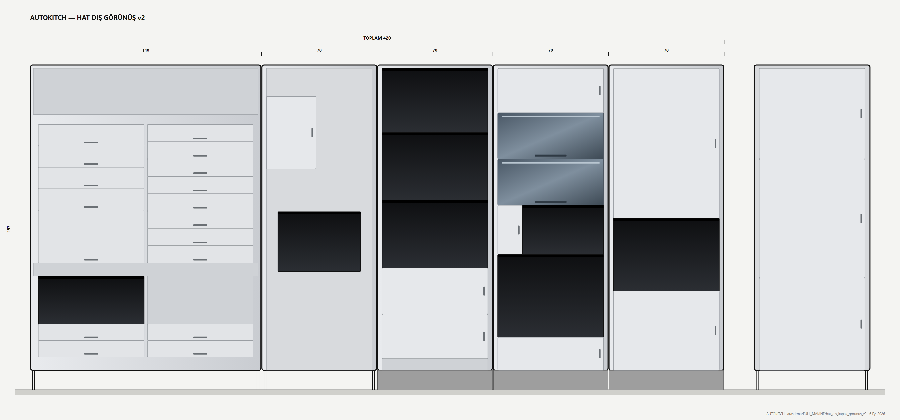

DÜKKAN — HAT · Yol CÜST SAYFA
Tek dükkân, bir kişilik otonom pide hattı. 3B modelde makine tek gruptur (kırmızı); tıklayınca istasyonlara ayrılır. Diğer birimler doğrudan kendi sayfasına gider. Kutular gerçek ölçüde, ileride gerçek modellerle değişir.
sürükle: döndür · tekerlek: yakınlaştır · üstüne gel: birim · tıkla: sayfası
1 · Genel çalışma senaryosu — siparişten teslime
- Müşteri kaldırımdaki sipariş ekranından ya da uygulamadan sipariş verir, ÖKC POS ile öder; fişte sipariş numarası ve 4 haneli dolap kodu yazar. Platform siparişleri (Yemeksepeti, Getir, Trendyol Go) entegratörle BEYİN'e düşer.
- BEYİN reçeteyi kuyruğa alır; fırın BEKLEME (340 °C) ya da EKO (250 °C) konumundan hazırlanır. Robot STORE'dan taze hamur topunu pençeyle alır.
- Top PRESS'te tepsi içinde Ø29 ısıtmalı plakayla açılır; pide bundan sonra hep tepsidedir (Ø32, kulp 6).
- Robot tepsiyi TOPPING katlarına sürer; kaplar helezonla gramaj döker (kaşar, sucuk küp, kıyma, kuşbaşı); tepsi tepsi düzleminde dönmez, kaplar sabittir.
- OVEN: sadeyağ spreyi (4 ml), taş fırın 3–4 dk (Omake çift katlı, motorlu cam kapak), çıkışta kesme presi 4 parça.
- PACK: üstten beslemeli kutu açıcı kutuyu kalıpta 1 vuruşta açar; tepsi eğilir, 4 parça kutuya kayar; flaplar ve kapak kapanır.
- Robot kutuyu pençeyle TESLİM DOLABI'nın arka klapesinden boş dolaba iter; içecek ve tatlı STORE'dan aynı dolaba konur. Kod aktif olur, SMS gider.
- Müşteri ya da kurye kod ünitesine PIN/QR girer; kapı açılır, alır; kapı kendiliğinden kapanır, dolap serbest kalır.
- Eleman haftada bir gelir: kaplar, kutu demetleri, yağ kabı; SERVICE dolabı ve tezgah onun. Günlük kova ve tepsi yıkama.
2 · Dükkan · özellikler ve karar özeti
İç ölçü420 × 264 = 11,1 m² (al-git, müşteri içeri girmez; kaldırımdan sipariş ve teslim)Arka duvarHAT 420: STORE 140 · PRESS 70 · TOPPING 70 · OVEN 70 · PACK 70, hepsi 84 derin, 197 yüksekRobot koridoru90 derin, ray 300 (x 60–360), eksen ince duvara 14, hat önüne 76İnce duvar6 cm (2 sac + yalıtım), x 0–296; tek kapı 70 kilitli, açılınca robot dururÖn sıra (cephe hattı)kapı 75 · tezgah 140×30 (pencere 130) · SERVICE 70×84 sırtı sokağa · teslim dolabı 124×52; ekran + kod SERVICE sırtındaDolap arkası32 + duvar payı 6 = 38 robot alanına açık (ince duvar dolap arkasında yok)Robot erişimiCRX-20iA/L 142: dolap dibi 119/132, TOPPING kap dibi çatalla 113, STORE/PACK uçları 111 ✓Nottezgah arkasında elemana 54 cm kalıyor (dar); ön zon 100 yapılırsa 11,8 m²
3 · Teknik resimler


4 · Tedarikçiler · fiyatlar (genel)
| Tedarikçi / ürün | Ne | Fiyat / durum |
|---|---|---|
| Fersah | PZP-400 pide/pizza presi (PRESS) | teklif alındı, bkz. PRESS |
| Omake / Cafemarkt | FPZ01.E21 çift katlı taş fırın (OVEN) | 40.169 TL |
| Picnic (referans) | helezonlu kap + tarak dozaj mantığı (TOPPING) | referans |
| KioSelf · Onega · İnnova · Kardo | 32" sipariş kiosku + ÖKC POS + fiş | 50–120 bin TL (teklif) |
| pudo · Easy Point · Emanetmatik · Fitekno | kilit kartı, kabin (teslim dolabı) | özel yapım 60–90 bin TL |
| Fanuc CRX-20iA/L · Doosan H2017 · TM20 | kobot 16–20 kg, menzil 142–170 | teklif alınacak |
5 · Soru işaretleri · açık konular (hat geneli)
| # | Problem | Durum | Çözüm / not |
|---|---|---|---|
| G1 | Robot kol arızası — hat durur | ÖNERİ VAR | yedek uç + servis sözleşmesi; eleman manuel teslim |
| G3 | Elektrik kesintisi sipariş ortasında | ÖNERİ VAR | mini UPS yalnız BEYİN; fırın kapalı kalır, sipariş iade |
| G4 | Kol kalibrasyonu kayarsa | ÖNERİ VAR | referans pimleri + kamera kontrolü |
| G5 | Hijyen denetimi (belediye/tarım) | AÇIK | kapalı panel, yıkanabilir tepsi, eleman günlük temizlik |
| R-T3 | Tepsi havuzu / yıkama (8–10 tepsi, ~80/gün) | AÇIK | bulaşık listesi SERVICE'te |
| R-T4 | Kol doluluğu ~%85 (103 sn/pide) | AÇIK | iki fırın katı + kutu ön hazırlığı ile pik 25–30/saat |
| ⑦ | Kol yükü 15,2 kg (kıyma kabı + kap + çatal), menzil ≥ 130 | AÇIK | 16–20 kg sınıfı kobot; CRX-20iA/L 142 / H2017 170 / TM20 130 |
| ⑤ | Fersah Ø30 taban sorusu | AÇIK | tekrar sorulacak |
| ① | STORE v5 (−18 kaset katı klapeli) | ÖNERİ VAR | Kemal onayı |
6 · Sürüm geçmişi
- Dükkan v7 (7 Eyl): düz cephe, ön sıra SERVICE derinliğinde, 11,1 m²
- Dükkan v5–v6 (7 Eyl): tek sıra cephe, kademeli deneme (reddedildi)
- Dükkan v1–v4 (7 Eyl): kroki okuma denemeleri; v4 kroki birebir
- HAT v51 (6 Eyl): PACK v4 kutu açıcı ile tüm hat; HAT v50: OVEN v5 tek yağ kabı; HAT v48: OVEN v3 kolon 70
- HAT v44–v47 (4–5 Eyl): STORE v4, PRESS v8, TOPPING v25/v26, KONTROL kutusu
- Yol C kararı (Ağu 2026): merkez mutfaksız, tek dükkân, bir kişilik hat